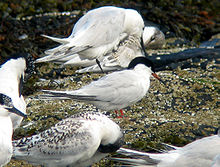
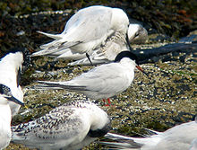

| Roseate Tern | |
|---|---|
|  | |
| Roseate Tern, with Sandwich Terns | |
| Conservation status | |
| Binomial name | |
| Sterna dougallii Montagu, 1813 |
| Roseate Tern | |
|---|---|
|  | |
| Roseate Tern, with Sandwich Terns | |
| Conservation status | |
| Binomial name | |
| Sterna dougallii Montagu, 1813 |
The Roseate Tern (Sterna dougallii) is a seabird of the tern family Sternidae. This bird has a number of geographical races, differing mainly in bill colour and minor plumage details.
S. d. dougallii breeds on the Atlantic coasts of Europe and North America, and winters south to the Caribbean and west Africa. Both the European and North American populations have been in long term decline, though active conservation measures have reversed the decline in the last few years at some colonies.
The tropical forms S. d. korustes and S. d. bangsi are resident breeders from east Africa across the Indian Ocean to Japan. They have more red on the bill. The long-billed and short-winged S. d. gracilis breeds in Australia and New Caledonia. The northwestern Indian Ocean holds populations of S. d. arideensis. Some authors suggest that only three races arideensis, gracilis and nominate dougallii should be retained.[2][3]
This species breeds in colonies on coasts and islands. It nests in a ground scrape, often in a hollow or under dense vegetation, and lays one or two (rarely three) eggs. It is less defensive of its nest and young than other white terns, often relying on Arctic and Common Terns in the surrounding colony to defend them. In smaller colonies, they may rarely mate with these other tern species.
As with other Sterna terns, Roseate Tern feeds by plunge-diving for fish, almost invariably from the sea; it is much more marine than allied terns, only rarely visiting freshwater lagoons on the coast to bathe and not fishing in fresh water. It usually dives directly, and not from the "stepped-hover" favoured by Arctic Tern. The offering of fish by the male to the female is part of the courtship display.
Unusually for a tern, the Roseate Tern shows some kleptoparasitic behaviour, stealing fish from other seabirds, at British colonies most often from Puffins. This habit greatly increases their food collecting ability during bad weather when fish swim deeper, out of reach of plunge-diving terns, but still within reach of the deeper-diving Puffins.
This is a small-medium tern, 33–36 cm long with a 67–76 cm wingspan, which can be confused with the Common Tern, Arctic Tern, and the larger, but similarly plumaged, Sandwich Tern.
Roseate Tern's thin sharp bill is black, with a red base which develops through the breeding season, and is more extensive in the tropical and southern hemisphere races. It is shorter-winged and has faster wing beats than Common or Arctic Tern. The upper wings are pale grey and its under parts white, and this tern looks very pale in flight, like a small Sandwich Tern, although the outermost primary flight feathers darken during the summer. The adults have very long, flexible tail streamers and orange-red legs. In summer, the underparts of adults take on the pinkish tinge which gives this bird its name.
The call of the Roseate Tern is a very characteristic chuwit, similar to that of the Spotted Redshank, quite distinct from other terns. In winter, the forehead becomes white and the bill black. Juvenile Roseate Terns have a scaly appearance like juvenile Sandwich Terns, but a fuller black cap than that species.
In the late 19th century, these birds were hunted for their plumes which were used to decorate hats. More recently, their numbers have decreased in some regions due to increased competition and predation by large gulls, whose numbers have increased in recent times.
With their favouring partly hidden nest sites, the provision of nestboxes has proven a dramatic conservation success, with the birds taking to them very readily. This results in greatly increased breeding productivity with the protection given to the young from predatory birds like Herring Gulls. At one colony on Coquet Island, Northumberland, the population rose from 25 pairs (1997) to 92 pairs (2005) after nestboxes were provided. Similar measures have been undertaken at the Anglesey tern colonies along with clearance of vegetation, in particular Tree Mallow.

{kind=link}
{kind=link}
{kind=link}